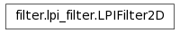

Inheritance diagram for scikits.image.filter.lpi_filter:

| author: | Stefan van der Walt, 2008 |
|---|---|
| license: | modified BSD |
Bases: object
Linear Position-Invariant Filter (2-dimensional)
| Parameters: | impulse_response : callable f(r, c, **filter_params)
|
|---|
Examples
Gaussian filter:
>>> def filt_func(r, c):
return np.exp(-np.hypot(r, c)/1)
>>> filter = LPIFilter2D(filt_func)
| scikits.image.filter.lpi_filter.constrained_least_squares(...) | |
| scikits.image.filter.lpi_filter.forward(data) | Apply the given filter to data. |
| scikits.image.filter.lpi_filter.inverse(data) | Apply the filter in reverse to the given data. |
| scikits.image.filter.lpi_filter.wiener(data) | Minimum Mean Square Error (Wiener) inverse filter. |
Apply the given filter to data.
| Parameters: | data : (M,N) ndarray
impulse_response : callable f(r, c, **filter_params)
filter_params : dict
|
|---|
Examples
Gaussian filter:
>>> def filt_func(r, c):
return np.exp(-np.hypot(r, c)/1)
>>> forward(data, filt_func)
Apply the filter in reverse to the given data.
| Parameters: | data : (M,N) ndarray
impulse_response : callable f(r, c, **filter_params)
filter_params : dict
max_gain : float
|
|---|
Minimum Mean Square Error (Wiener) inverse filter.
| Parameters: | data : (M,N) ndarray
K : float or (M,N) ndarray
impulse_response : callable f(r, c, **filter_params)
filter_params : dict
|
|---|